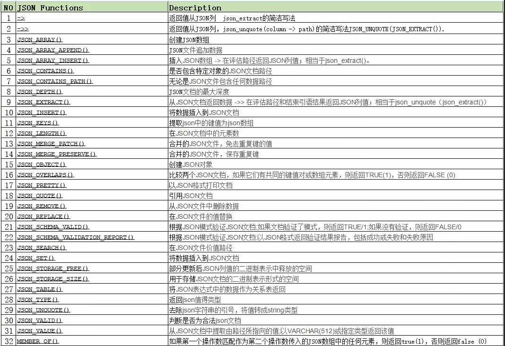

在mysql中使用json数据类型 grom
- 作者:
- 淡白
- 创建时间：
- 2022-03-16 15:01:22
- Go MySQL gorm
摘要：MySQL自从5.7版本开始支持JSON数据类型字段。本文介绍了如何使用MySQL和GORM库操作JSON类型的数据。首先，需要自定义数据类型来支持JSON字段，并实现Value和Scan接口。然后，可以通过语句"字段名->'$.json属性名'"来访问JSON属性，并进行查询和修改操作。此外，还介绍了一些MySQL内置函数用于操作JSON数据。更多详细信息可以参考附带的链接。
mysql json类型
MySQL 5.7起支持JSON数据类型的字段。JSON作为现在最为流行的数据交互形式，MySQL也不断跟进，在5.7版本开始新增JSON数据类型。本文基于MySQL 8.0.28
gorm配置
目前gorm还不支持json类型需要自己通过自定义类型来实现
type Test struct {
ID int64
Name string
Age int64
Data Data `gorm:"type:json"`
}
type Data struct {
UserInfo UserInfo `json:"user_info"`
DataSize int64 `json:"data_size"`
Comment string `json:"comment"`
}
func (c Data) Value() (driver.Value, error) {
b, err := json.Marshal(c)
return string(b), err
}
func (c *Data) Scan(input interface{}) error {
return json.Unmarshal(input.([]byte), c)
}
type UserInfo struct {
Site string `json:"site"`
PhoneNumber string `json:"phone_number"`
HeadAddress string `json:"head_address"`
Distance int64 `json:"distance"`
}
查询
通过字段名->'$.json属性名'来访问json属性
var tests []modle.Test
begin.Model(&modle.Test{}).Where("data->'$.data_size' < ?", 100).Find(&tests)
log.Println(len(tests))
查询json中data_size小于100的数据
修改
由于没有支持json类型只能靠自己去实现Build接口去实现一些mysql内置函数的拼接接口实现例子
var test modle.Test
begin.Model(&modle.Test{}).Where("data->'$.user_info.site' = ?", "khcUTxnAUBNZkAOBXmJnYwHPYtdmKfLRdHwnxfozlYhANGTEXKIbphMyzFoUDJFf").Find(&test)
log.Println(test.ID)
test.Data.DataSize++
begin.Updates(&test)
sql
UPDATE `test` SET `name`='BqLpGYaP',`age`=23,`data`='{"user_info":{"site":"khcUTxnAUBNZkAOBXmJnYwHPYtdmKfLRdHwnxfozlYhANGTEXKIbphMyzFoUDJFf","phone_number":"padWxlWJrOQ","head_address":"YAZxSORyWOdoXdjvnuixBJU
PwAvzVXZsuZJPCOhuHzBDMbBGXUvuJPhaLEIYTWrmhRnhzYABtzNDaOSOXwRziKoEUBdZOIOhzZNoncfjFodkYglnqudLUevHrOlAoPki","distance":835},"data_size":849,"comment":"ufDErrgfktIVDCbnFinqfUQbWEAMiEEawhlPjWAIOOXYyjqzObjcvFrTBzEzChZlaKpBEpTfzDaJjgicZzdiNWMADdwIFvHzcbylnTKVjwWNUBVpfjdkUlysPtjdZxAk"}' WHERE `id` = 311091
通过函数更新
update test set `data` = JSON_SET(`data`, '$.user_info.site', "a") where id =311091;
内置函数
